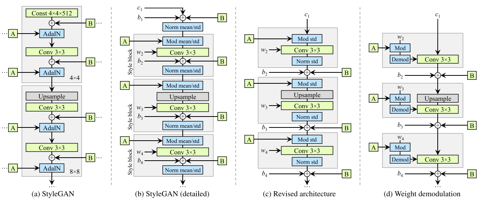
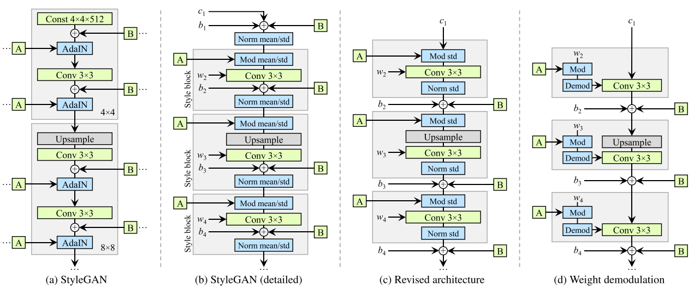

概述
归一化
缺点： 造成 blob 或 corrupted 的图片
方法： 移除 AdaIN里的bias， 即只保留 std
Demodulation
移除 normalization操作， 转成 w -> w' = s w -> w'' = w'/ $\sqrt{\sum w'}$

正则化
PPL(perceptual path length)跟感知图像质量的关系
缺点： 造成 blob 或 corrupted 的图片
方法： 移除 AdaIN里的bias， 即只保留 std
移除 normalization操作， 转成 w -> w' = s w -> w'' = w'/ $\sqrt{\sum w'}$

PPL(perceptual path length)跟感知图像质量的关系